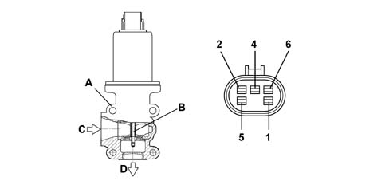

OPERATION
- Path
- Descriptions > 10 ENGINE > 1080 EMISSION CONTROL SYSTEM > 1080C MOTOR FOR EGR VALVE SELF-ADJUSTMENT - R.R. > OPERATION
- Kind
- system description
- Applies to
- engines: 2.4 JTD 20V; all production periods
- Interactive page
- https://sloeber94.github.io/elrnDB-lThss/en/#/841754
Applies to: engines: 2.4 JTD 20V; all production periods
At coolant temperatures of > 20°C with the engine speed between 800 and 3000 rpm, the engine management control unit operates the EGR solenoid valve with a square wave signal.
The variation in this signal allows the EGR coil to move a shutter, thereby regulating the flow of exhaust gases from the exhaust manifold to the intake manifold; there are two results:
- less air is introduced
- the combustion temperature is reduced (on account of the presence of inert gases) resulting in a decrease in the formation of NOx (nitrogen oxides).
The engine management control unit is constantly informed of the quantity of gas recirculated through the information coming from the flow meter: in effect, if there is an intake of a certain quantity of air (Qam) for a given engine speed and the value sent by the flow meter (Qar) is lower, then the difference (Qgr) is the value for the quantity of gas recirculated
- Qam - Qar = Qgr
- Qam = theoretical quantity of air memorized
- Qar = quantity of actual air
- Qgr = quantity of recirculated gases
The atmospheric pressure signal is used for the operation of the EGR solenoid valve to recognize the condition of driving at altitude in order to reduce the quantity of gas recirculated and to prevent engine fumes.
EGR SOLENOID VALVE
Specifications
The Pierburg EGR solenoid valve, fitted on the intake manifold, has the task of modulating the flow of exhaust gases to the intake according to the command from the injection control unit.
This modulation takes place by means of the internal solenoid, with PWM operation by the control unit, which activates the control rod via the internal valve.

- 1. EGR valve body
- 2. inner valve
- 3. gas intake from exhaust manifold
- 4. gas outlet to intake manifold
- 5. 5V potentiometer power supply
- 6. Potentiometer negative
- 7. Solenoid negative
- 8. Potentiometer positive signal